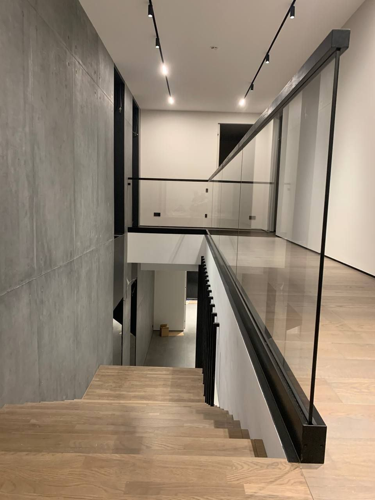
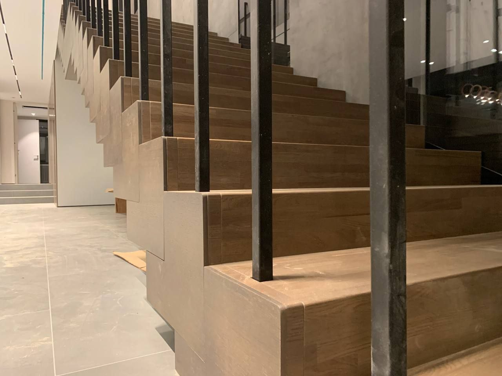
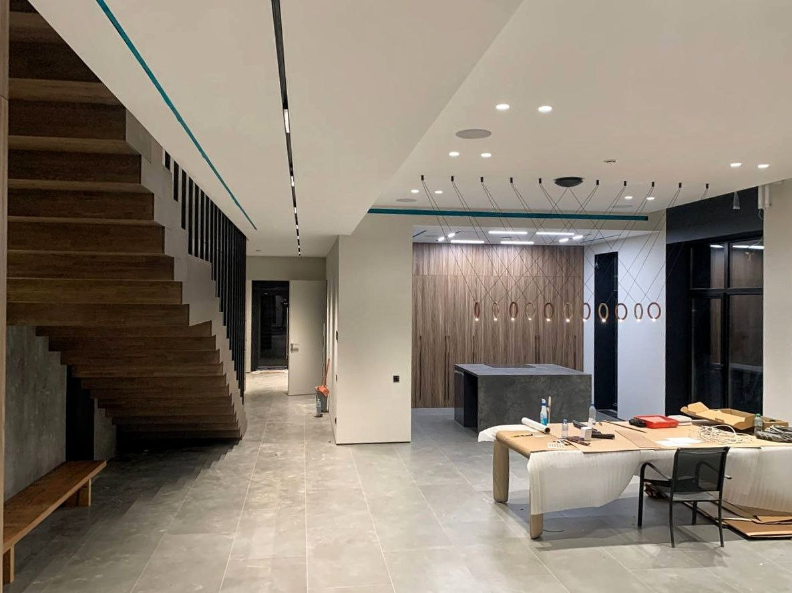
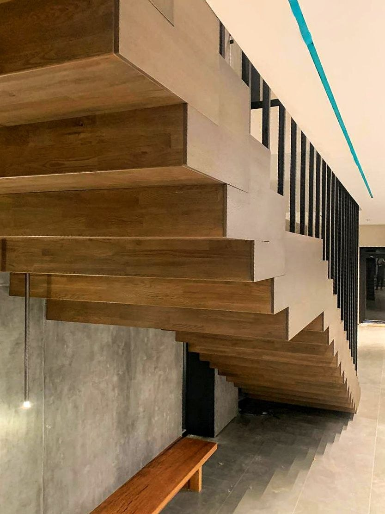

Реализованный проект · Барвиха
Дуб, стекло и точная геометрия
Лестница на усиленном металлокаркасе с полной дубовой отделкой и ограждением из осветлённого стекла. В проекте соединили массив дерева, лаконичный металл и прозрачные плоскости, сохранив лёгкость пространства.

Архитектура проекта
Металл как основа.
Дуб как прикосновение.
Каркас усилен металлическими балками, закреплёнными к бетонному перекрытию. Металлические элементы окрашены порошковой краской. Ступени и облицовка выполнены из дубового мебельного щита на паркетной ламели; замковые соединения и отсутствие выступающих свесов поддерживают чистую геометрию марша.
Фотографии проекта
Детали вблизи и в интерьере





Видео проекта
Лестница в движении
Общий вид лестницы и пространства.
Отделка, ступени и стеклянное ограждение.
Состав работ
Продуманные узлы
и точный монтаж
В проекте применены специальные решения для закрытия металлических балок и чистого сопряжения дерева со стеклом.
- Дубовая отделка: мебельный щит из паркетной ламели, ступени без свесов со специальными замковыми соединениями.
- Торцы и каркас: декоративные сапожки из МДФ со шпонированной отделкой и Г-образные доборные элементы для закрытия балок.
- Металл: усиление конструкции балками, закреплёнными к бетонному перекрытию; порошковая окраска металлических элементов.
- Стекло: осветлённое стекло на коннекторах в оконных проёмах и на балюстраде; дополнительное крепление к стене. На балюстраде — алюминиевый профиль. Общая длина стеклянного ограждения на балюстраде — около 8 пог. м.
- Поручень: деревянный, сечением 40 × 40 мм, покрыт чёрным маслом в три слоя. Скрытый фрезерованный паз позволяет установить его на верхнюю кромку стекла.
- Освещение: предусмотрены декоративные светильники под лестницей и заранее размещённые электрические выводы.
Лестница по вашему проекту
Подберём конструкцию, материалы и ограждение под интерьер и размеры помещения. Стоимость и состав работ согласуем после замера.